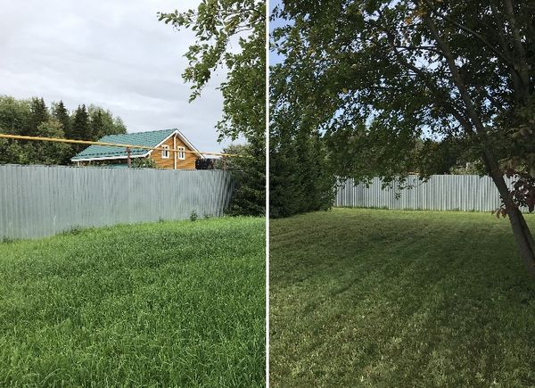
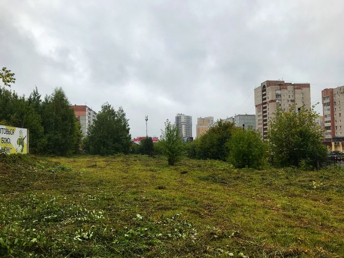
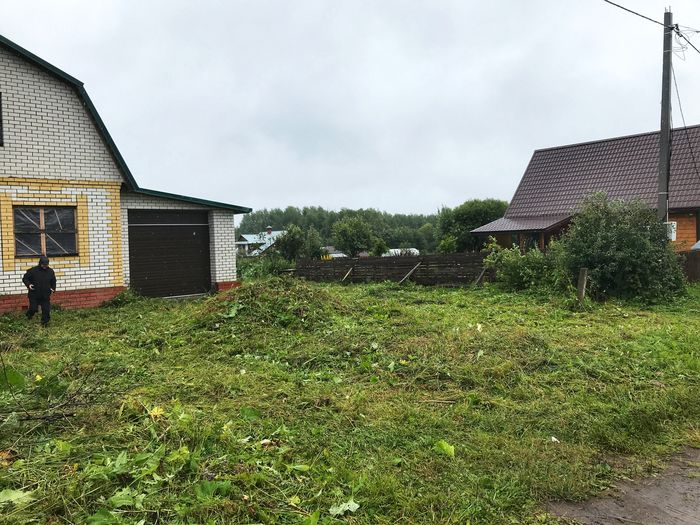
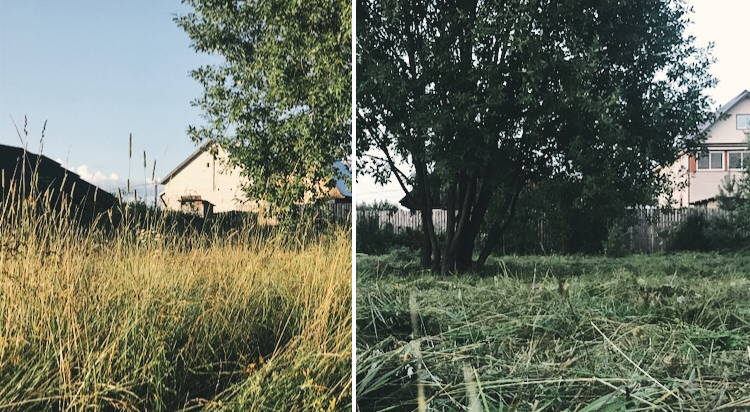
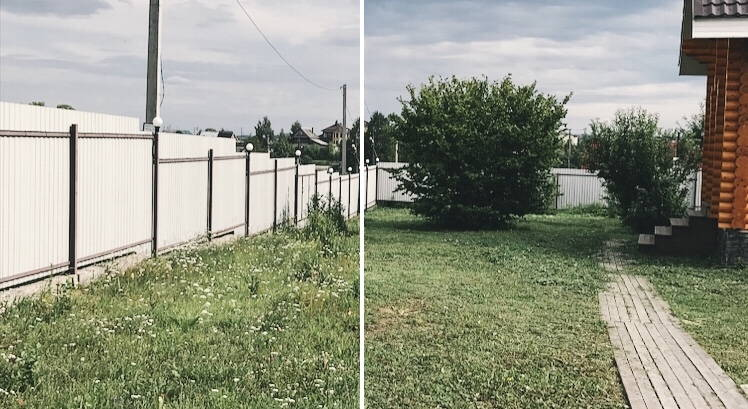

Галерея работ
2019
17 августа
Участок: 10 соток
Заказчик: Частное лицо
Время: 4 часа
Вид работ: Покос травы и триммером и газонокосилкой
Бывют участки которые забывают покосить. газонокосилка просто не возьмет высокую траву, поэтому сначала выкашевается триммером.
13 августа
Участок: 50 соток
Заказчик: Строительная компания
Время: 2 дня
Вид работ: Покос травы и вырубка кустов
Перед любым строительством сначала нужно скосить траву на участке. От заключения договора до акта выполненных работ прошло 2 дня.
6 августа
Участок: 10 соток
Заказчик: Частное лицо
Время: 2 часа 20 минут
Вид работ: Покос травы
Участок был выкошен перед выравниванием участка.

29 июля
Участок: 4 сотки
Заказчик: Частное лицо
Время: 1 час
Вид работ: Покос травы
По правилам мчс сухостой может стать причиной пожара. Теперь у пожарников не будет вопросов.
24 июля
Участок: 10 соток
Заказчик: Частное лицо
Время: 3 часа
Вид работ: Покос травы
Скос травы в Коминтерне. Заказчик, не возвращаясь на участок, принял работу по видео которое отправил в ватсап.
19 июля
Участок:7 соток
Заказчик: Частное лицо
Время: 2 часа 20 минут
Вид работ: Покос травы
Участок был вокошен для очень занятого человека, работа была принята удаленно по фотогрфиям и видео которые я отправил, оплата банковским переводом
